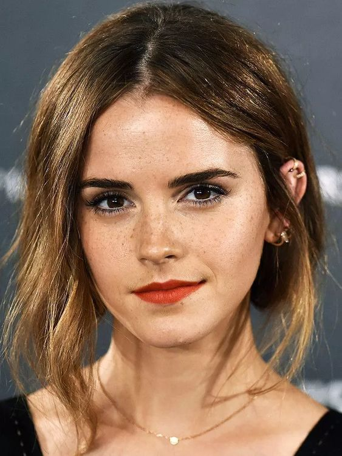
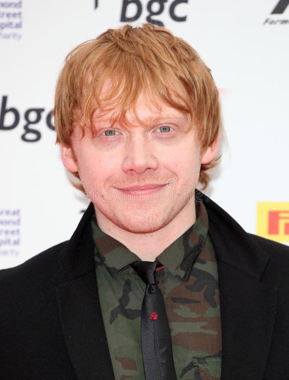
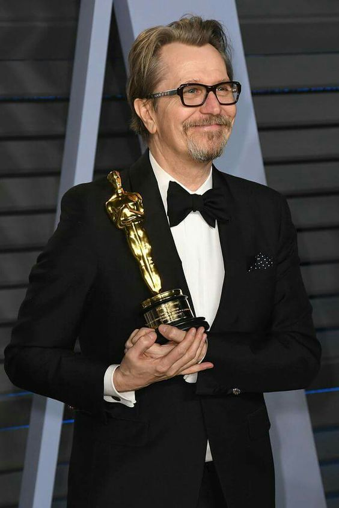
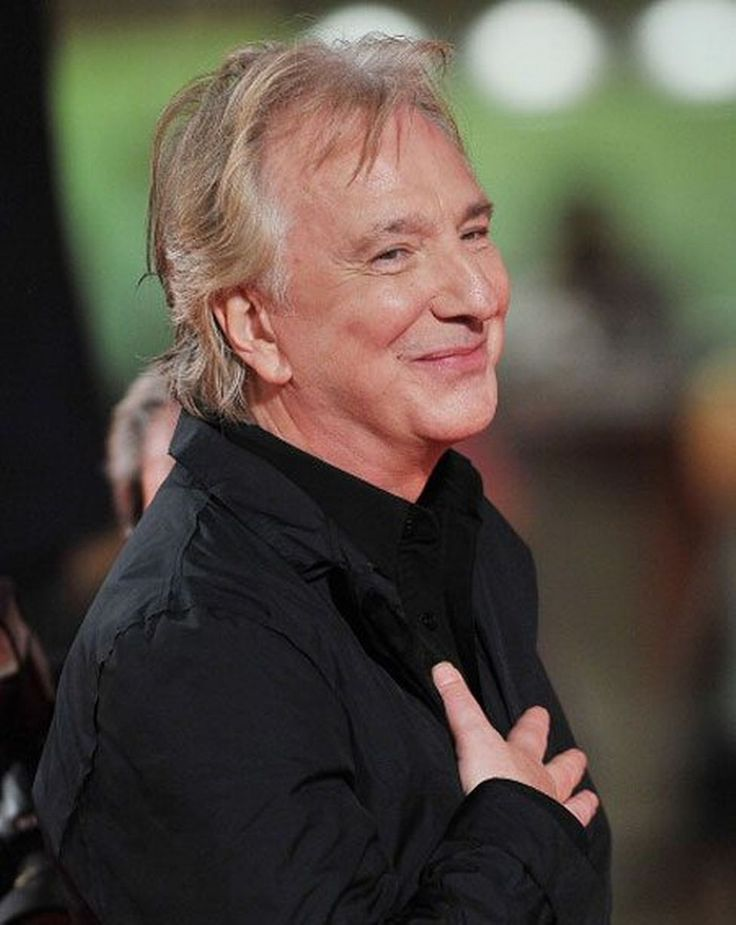
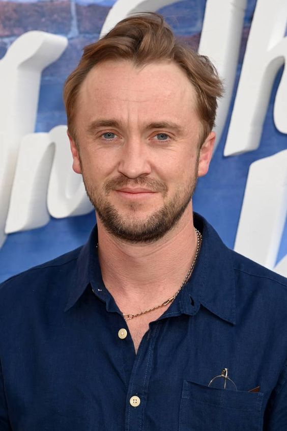
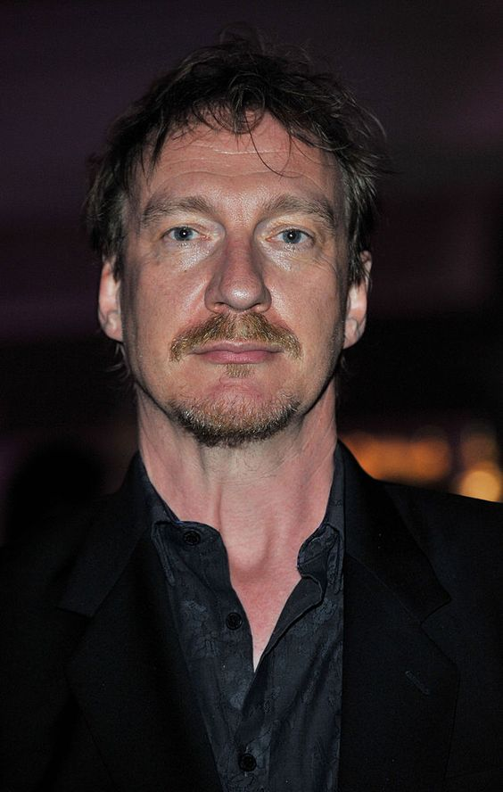
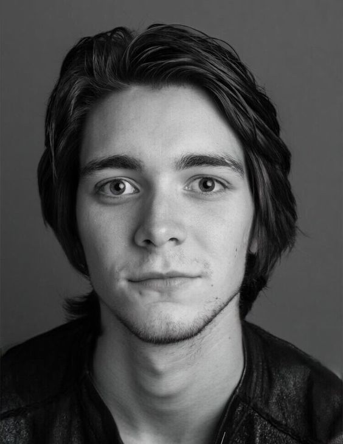
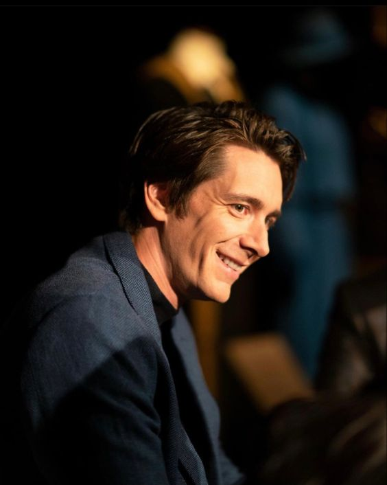

Daniel Redcliffe, Nascido em 23 de julho de 1989 (idade 32 anos), Queen Charlotte's and Chelsea Hospital, Londres, Reino Unido, Ganhou um Empire Award: Melhor Ator

Emma Watson, Nascida em 15 de abril de 1990 (idade 32 anos), Paris, França Ganhou um Otto Award: Melhor Atriz

Rupert Grint, Nascido em 24 de agosto de 1988 (idade 33 anos), Harlow, Reino Unido, Ganhou um Satellite Awards - Melhor Revelação

Gary Oldman, 21 de março de 1958 (idade 64 anos), New Cross, Londres, Reino Unido, Ganhou um oscar de melhor ator

Alan Rickman, 21 de fevereiro de 1946 (atualmete teria 76 anos), Hammersmith, Londres, Reino Unido, Falecimento 14 de janeiro de 2016, Londres, Reino Unido, Ganhou um Prêmio Globo de Ouro: Melhor Ator em Minissérie ou Filme para Televisão

Tom Felton, 22 de setembro de 1987 (idade 34 anos), Epsom, Reino Unido, Ganhou um MTV Movie Award: Melhor Vilão

David Thewlis, 20 de março de 1963 (idade 59 anos), Blackpool, Reino Unido, Ganhou um New York Film Critics Circle Award de Melhor Ator

James Phelps, 25 de fevereiro de 1986 (idade 36 anos), Sutton Coldfield, Reino Unido

Oliver Phelps, 25 de fevereiro de 1986 (idade 36 anos), Sutton Coldfield, Reino Unido